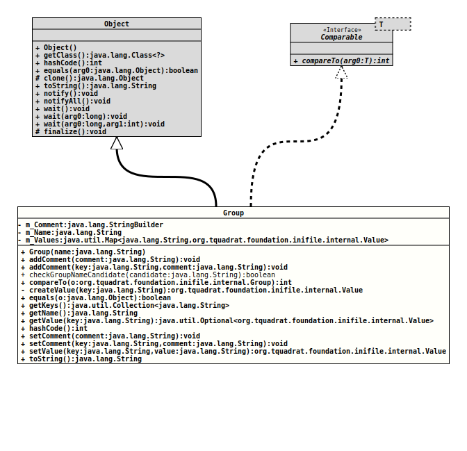

java.lang.Object
org.tquadrat.foundation.inifile.internal.Group
- All Implemented Interfaces:
Comparable<Group>
@ClassVersion(sourceVersion="$Id: Group.java 1105 2024-02-28 12:58:46Z tquadrat $")
@API(status=INTERNAL,
since="0.1.0")
public final class Group
extends Object
implements Comparable<Group>
The group for an INI file.
- Author:
- Thomas Thrien (thomas.thrien@tquadrat.org)
- Version:
- $Id: Group.java 1105 2024-02-28 12:58:46Z tquadrat $
- Since:
- 0.1.0
- UML Diagram
-

UML Diagram for "org.tquadrat.foundation.inifile.internal.Group"
{kind=link}
-
Field Summary
Fields -
Constructor Summary
Constructors -
Method Summary
Modifier and TypeMethodDescriptionfinal voidaddComment(String comment) Adds a comment to the group.final voidaddComment(String key, String comment) Adds a comment to the value with the given key.static final booleancheckGroupNameCandidate(String candidate) An implementation ofPredicateto be used withObjects.requireValidArgument(Object,String,Predicate)when checking the names for new groups.final intprivate final ValuecreateValue(String key) Creates a new instance ofValuefor the given name.final booleanfinal Collection<String> getKeys()Returns all keys for this group.final StringgetName()Returns the name for this group.Returns the value for the given key from this group.final inthashCode()final voidsetComment(String comment) Sets a comment to the group.final voidsetComment(String key, String comment) Sets a comment to the value with the given key.final ValueSets the given value for the given key.final StringtoString()
-
Field Details
-
m_Comment
The comment for this group. -
m_Name
The name of the group. -
m_Values
The values for this group.
-
-
Constructor Details
-
Group
Creates a new instance forGroup.- Parameters:
name- The name for the group.
-
-
Method Details
-
addComment
Adds a comment to the group.- Parameters:
comment- The comment.
-
addComment
Adds a comment to the value with the given key.- Parameters:
key- The key.comment- The comment.
-
checkGroupNameCandidate
@API(status=INTERNAL, since="0.4.4") public static final boolean checkGroupNameCandidate(String candidate) An implementation of
Predicateto be used withObjects.requireValidArgument(Object,String,Predicate)when checking the names for new groups.The candidate may not contain newline characters, tab characters or closing brackets (']').
You should avoid equal signs ('='), hash signs ('#') and opening brackets ('['), too, although they are technically allowed.
- Parameters:
candidate- The key or name to check.- Returns:
trueif the value is a valid name or key.- Throws:
NullArgumentException- The candidate isnull.EmptyArgumentException- The candidate is the empty string.BlankArgumentException- The candidate consists of whitespace only.- Since:
- 0.4.4
-
compareTo
This method is different from
equals()as it does not consider the comment.- Specified by:
compareToin interfaceComparable<Group>- Since:
- 0.4.2
-
createValue
Creates a new instance ofValuefor the given name.- Parameters:
key- The name of the value.- Returns:
- The new instance.
-
equals
-
getKeys
Returns all keys for this group.- Returns:
- The keys.
-
getName
Returns the name for this group.- Returns:
- The group's name.
-
getValue
Returns the value for the given key from this group.- Parameters:
key- The key.- Returns:
- An instance of
Optionalthat holds the value.
-
hashCode
-
setComment
Sets a comment to the group.
Any previously existing comment will be overwritten.
- Parameters:
comment- The comment.- Since:
- 0.4.2
-
setComment
Sets a comment to the value with the given key.
Any previously existing comment will be overwritten.
- Parameters:
key- The key.comment- The comment.- Since:
- 0.4.2
-
setValue
Sets the given value for the given key.- Parameters:
key- The key.value- The new value; can benull.- Returns:
- The instance of
Valuefor the new value.
-
toString
-